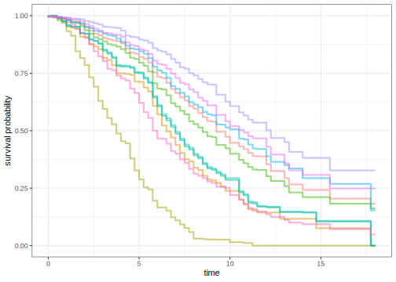
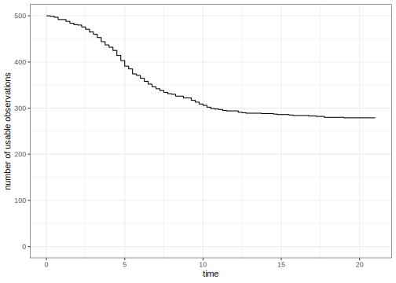
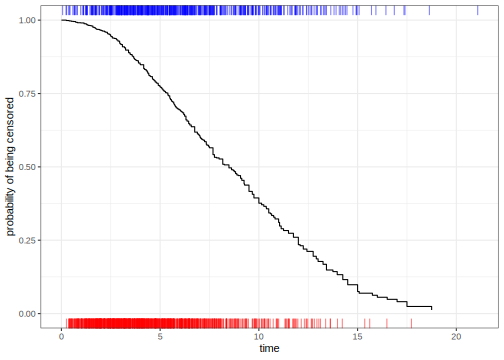

One trend in modern survival analysis is to compute time-dependent measures of performance. These are primarily driven by an increased focus on predictions for the probability of survival at a given time (as opposed to the predictions of event times or linear predictors). Since these are conditional on the time of evaluation, we call the dynamic performance metrics.
Many dynamic metrics are similar to, if not the same, as those used in binary classification models. Examples include the Brier score and ROC curves (that’s another article though). In other words, at a given time for model evaluation, we try to encode the observed event time data into a binary “was there an event at time t?” version. We also convert the predicted survival probabilities into predicted events/non-events based on a threshold (default is 0.50).
The section below discusses the practical aspects of moving to a binary outcome and the statistical implications. Before we start, though, let’s define the various types of times that will be mentioned:
For example, we’ll simulate some data using the methods of Bender et al (2005) using the prodlim package. A training and validation set are simulated. We’ll also load the censored package so that we can fit a model to these time-to-event data:
library(tidymodels)
library(censored)
#> Loading required package: survival
library(prodlim)
set.seed(5882)
sim_dat <- SimSurv(1000) %>%
mutate(event_time = Surv(time, event)) %>%
select(event_time, X1, X2)
set.seed(2)
split <- initial_split(sim_dat)
sim_tr <- training(split)
sim_val <- testing(split)We’ll need a model to illustrate the code and concepts. Let’s fit a bagged survival tree model to the training set:
set.seed(17)
bag_tree_fit <-
bag_tree() %>%
set_mode("censored regression") %>%
set_engine("rpart") %>%
fit(event_time ~ ., data = sim_tr)
bag_tree_fit
#> parsnip model object
#>
#>
#> Bagging survival trees with 25 bootstrap replications
#>
#> Call: bagging.data.frame(formula = event_time ~ ., data = data)Using this model, we’ll be able to make predictions of different types.
This type of censored regression model can make static predictions via the predicted event time using predict(object, type = "time"). It can also make dynamic predictions regarding the probability of survival for each data point at specific times. The syntax for this is
predict(object, new_data, type = "survival", eval_time = numeric())where eval_time is a vector of time points at which we want the corresponding estimates of the survivor function. Alternately, we can use the augment() function to get both types of prediction and automatically attach them to the data being predicted.
The largest event time in the training set is 18.1 so we will use a set of evaluation times between zero and 18. From there, we use augment():
time_points <- seq(0, 18, by = 0.25)
val_pred <- augment(bag_tree_fit, sim_val, eval_time = time_points)
val_pred
#> # A tibble: 250 × 5
#> .pred .pred_time event_time X1 X2
#> <list> <dbl> <Surv> <dbl> <dbl>
#> 1 <tibble [73 × 5]> 9.48 5.78 1 -0.630
#> 2 <tibble [73 × 5]> 6.67 3.26+ 0 0.792
#> 3 <tibble [73 × 5]> 3.82 2.34 1 0.811
#> 4 <tibble [73 × 5]> 8.53 7.45+ 1 -0.271
#> 5 <tibble [73 × 5]> 7.07 8.05 0 0.315
#> 6 <tibble [73 × 5]> 7.24 14.09 0 0.264
#> 7 <tibble [73 × 5]> 10.6 5.23+ 0 -0.532
#> 8 <tibble [73 × 5]> 12.3 3.18+ 0 -1.41
#> 9 <tibble [73 × 5]> 11.0 1.86 1 -0.851
#> 10 <tibble [73 × 5]> 6.03 7.20 1 -0.0937
#> # ℹ 240 more rowsThe .pred column contains the dynamic predictions in a list column. Since length(time_points) is 73, each data frame in the list column has that many rows:
val_pred$.pred[[1]]
#> # A tibble: 73 × 5
#> .eval_time .pred_survival .weight_time .pred_censored .weight_censored
#> <dbl> <dbl> <dbl> <dbl> <dbl>
#> 1 0 1 0 1 1
#> 2 0.25 0.996 0.250 1 1
#> 3 0.5 0.993 0.500 0.997 1.00
#> 4 0.75 0.993 0.750 0.995 1.01
#> 5 1 0.989 1.00 0.992 1.01
#> 6 1.25 0.984 1.25 0.985 1.02
#> 7 1.5 0.975 1.50 0.978 1.02
#> 8 1.75 0.974 1.75 0.969 1.03
#> 9 2 0.964 2.00 0.956 1.05
#> 10 2.25 0.949 2.25 0.944 1.06
#> # ℹ 63 more rowsThe .pred_survival column has the predictions. We’ll see what the other columns represent in the next few sections.
Let’s plot the estimated survivor curves for the first 10 data points in the validation set:
# Unnest the list columns:
dyn_val_pred <-
val_pred %>%
select(.pred, event_time) %>%
add_rowindex() %>%
unnest(.pred)
dyn_val_pred %>%
filter(.row <= 10) %>%
ggplot(aes(.eval_time, .pred_survival, group = .row, col = factor(.row))) +
geom_step(direction = "vh", linewidth = 1, alpha = 1 / 2, show.legend = FALSE) +
labs(x = "time", y = "survival probability")
We follow the process described by Graf et al (1999) where observations at evaluation time t are categorized into three groups.
We can use the first two sets of data to compute binary performance metrics, but the third set cannot be used. Note that the size of the third group is likely to grow as the evaluation time increases. This means we’ll have fewer data points to evaluate with late evaluation times. This implies that the variation in the metrics will be considerable as time goes on. For our simulated training set:
dyn_val_pred %>%
summarize(num_usable = sum(!is.na(.weight_censored)), .by = c(.eval_time)) %>%
ggplot() +
geom_step(aes(.eval_time, num_usable)) +
labs(x = "time", y = "Number of Usable Samples") +
lims(y = c(0, nrow(sim_val)))
Unfortunately, the categorization scheme shown above is not sufficient to compute metrics. Graf took a page from the causal inference literature and added a propensity-type score based on the likelihood that each data point would be censored (regardless of the observed event status).
How do we compute this probability? It appears that the standard approach is to compute a “reverse Kaplan-Meier” (RKM) curve. Ordinarily, the Kaplan-Meier (KM) curve models the probability of an event (e.g., survival). The reverse curve models the probability of censoring (e.g., modeling non-events). This should give us a fairly reliable non-parametric model for estimating the probability of being censored at a given time.
Every time a censored regression model is created using tidymodels, the RKM is estimated on the same data being used to fit the model and attached to the parsnip object.
For our simulated data, here is what the RKM curve looks like:

The red rug on the bottom shows the training point event times and the blue values at the top represent the times for the censored training set observations.
For any dynamic computations, we multiply the contributions of the case by the inverse of the probability of being censored. This is called the inverse probability of censoring weights (IPCW). This should theoretically balance the exposure/effect/influence that the definitive observations have on performance calculations.
First, when do we evaluate the probability of censoring? There are different approaches used in the literature, and we follow what Graf suggests (as it seems most appropriate):
Here’s an example using the first data point in the validation set:
dyn_val_pred %>%
filter(.row == 1 & .eval_time %in% c(1, 5, 5.75, 10, 15)) %>%
select(event_time, .eval_time, .weight_time, .pred_censored, .weight_censored)
#> # A tibble: 5 × 5
#> event_time .eval_time .weight_time .pred_censored .weight_censored
#> <Surv> <dbl> <dbl> <dbl> <dbl>
#> 1 5.78 1 1.00 0.992 1.01
#> 2 5.78 5 5.00 0.779 1.28
#> 3 5.78 5.75 5.75 0.714 1.40
#> 4 5.78 10 5.78 0.710 1.41
#> 5 5.78 15 5.78 0.710 1.41The observed event time was 5.779. Up until that evaluation time, the probability of being censored is computed at the evaluation time. After that, it is based on the event time.
We also slightly modify the time that the censoring probability is computed. If our evaluation time is today, we don’t have today’s data yet. In tidymodels, we calculate the probability of censoring is computed just before the requested evaluation time. We are basically subtracting a small numerical value from the evaluation time used in the RKM model. You’ll only really see a difference if there is a bulk of censored observations at the original evaluation time.
Finally, we use a simple RKM curve (i.e., no covariates or strata). This implies that there is non-informative censoring. Other applications of IPCW try to mitigate the effects of informative censoring. In the future, we may allow the model to include covariates (as well as models beyond the RKM).
time_as_binary_event <- function(surv, eval_time) {
event_time <- parsnip:::.extract_surv_time(surv)
status <- parsnip:::.extract_surv_status(surv)
is_event_before_t <- event_time <= eval_time & status == 1
# Three possible contributions to the statistic from Graf 1999
# Censoring time before eval_time, no contribution (Graf category 3)
binary_res <- rep(NA_character_, length(event_time))
# A real event prior to eval_time (Graf category 1)
binary_res <- ifelse(is_event_before_t, "event", binary_res)
# Observed time greater than eval_time (Graf category 2)
binary_res <- ifelse(event_time > eval_time, "non-event", binary_res)
factor(binary_res, levels = c("event", "non-event"))
}
binary_encoding <-
dyn_val_pred %>%
mutate(
obs_class = time_as_binary_event(event_time, .eval_time),
pred_class = if_else(.pred_survival >= 1 / 2, "non-event", "event"),
pred_class = factor(pred_class, levels = c("event", "non-event")),
)While another article delves into the details of performance metrics for censored data, we’ll look at the 2x2 confusion matrices at a few time points.
Let’s start with an evaluation time of 1.00. Ordinarily, we would simply use:
binary_encoding %>%
filter(.eval_time == 1.00) %>%
conf_mat(truth = obs_class, estimate = pred_class)to compute the metric. This would ignore the censoring weights so we’ll add the case_weights argument to conf_mat():
#: label: conf-mat-01
binary_encoding %>%
filter(.eval_time == 1.00) %>%
conf_mat(truth = obs_class,
estimate = pred_class,
case_weights = .weight_censored)
#> Truth
#> Prediction event non-event
#> event 0.00 0.00
#> non-event 6.03 244.99The values in the cells are the sum of the censoring weights, There are 6 actual events (out of 249 usable values) before this evaluation time, so there are empty cells. Also note that the cell values are close to the actual counts. This early, the predicted censoring probabilities are very close to one so there inverse values are also.
This early, performance looks very good but that is mostly since there are few events and they are all predicted well (at least with the default 50% cutoff).
Let’s shift to an evaluation time of 5.0.
#: label: conf-mat-05
binary_encoding %>%
filter(.eval_time == 5.00) %>%
conf_mat(truth = obs_class,
estimate = pred_class,
case_weights = .weight_censored)
#> Truth
#> Prediction event non-event
#> event 72.6 24.4
#> non-event 30.7 119.4Now we have fewer total observations to consider (205 instead of 249 usable values) and more events (93 this time). Performance is fairly good; the sensitivity is 70.3% and the specificty is 83%.
What happends when the evaluation time is 17?
#: label: conf-mat-17
binary_encoding %>%
filter(.eval_time == 17.00) %>%
conf_mat(truth = obs_class,
estimate = pred_class,
case_weights = .weight_censored)
#> Truth
#> Prediction event non-event
#> event 245.4 24.7
#> non-event 0.0 0.0The data are overwhelmingly events: 148 out of 149 observations. Also, the censoring weights are larger now since the probability of being censored is very low. The mean censoring weight is 1.81.
There’s more on dynamic performance metrics in another article.
When converting censored event time data to a binary format, the main point to remember are:
#> ─ Session info ─────────────────────────────────────────────────────
#> setting value
#> version R version 4.2.3 (2023-03-15)
#> os macOS Big Sur ... 10.16
#> system x86_64, darwin17.0
#> ui X11
#> language (EN)
#> collate en_US.UTF-8
#> ctype en_US.UTF-8
#> tz America/New_York
#> date 2023-05-15
#> pandoc 3.1.1 @ /usr/local/bin/ (via rmarkdown)
#>
#> ─ Packages ─────────────────────────────────────────────────────────
#> package * version date (UTC) lib source
#> broom * 1.0.4 2023-03-11 [1] CRAN (R 4.2.0)
#> censored * 0.1.1.9003 2023-04-07 [1] Github (tidymodels/censored@b78d6a9)
#> dials * 1.2.0 2023-04-03 [1] CRAN (R 4.2.0)
#> dplyr * 1.1.2 2023-04-20 [1] CRAN (R 4.2.0)
#> ggplot2 * 3.4.2 2023-04-03 [1] CRAN (R 4.2.0)
#> infer * 1.0.4 2022-12-02 [1] CRAN (R 4.2.0)
#> parsnip * 1.1.0.9001 2023-05-15 [1] Github (tidymodels/parsnip@ab42409)
#> prodlim * 2023.03.31 2023-04-02 [1] CRAN (R 4.2.0)
#> purrr * 1.0.1 2023-01-10 [1] CRAN (R 4.2.0)
#> recipes * 1.0.6 2023-04-25 [1] CRAN (R 4.2.0)
#> rlang 1.1.1 2023-04-28 [1] CRAN (R 4.2.0)
#> rsample * 1.1.1 2022-12-07 [1] CRAN (R 4.2.0)
#> tibble * 3.2.1 2023-03-20 [1] CRAN (R 4.2.0)
#> tidymodels * 1.0.0 2022-07-13 [1] CRAN (R 4.2.0)
#> tune * 1.1.1.9001 2023-05-15 [1] Github (tidymodels/tune@fdc0016)
#> workflows * 1.1.3 2023-02-22 [1] CRAN (R 4.2.0)
#> yardstick * 1.2.0 2023-04-21 [1] CRAN (R 4.2.0)
#>
#> [1] /Users/max/Library/R/x86_64/4.2/library
#> [2] /Library/Frameworks/R.framework/Versions/4.2/Resources/library
#>
#> ────────────────────────────────────────────────────────────────────